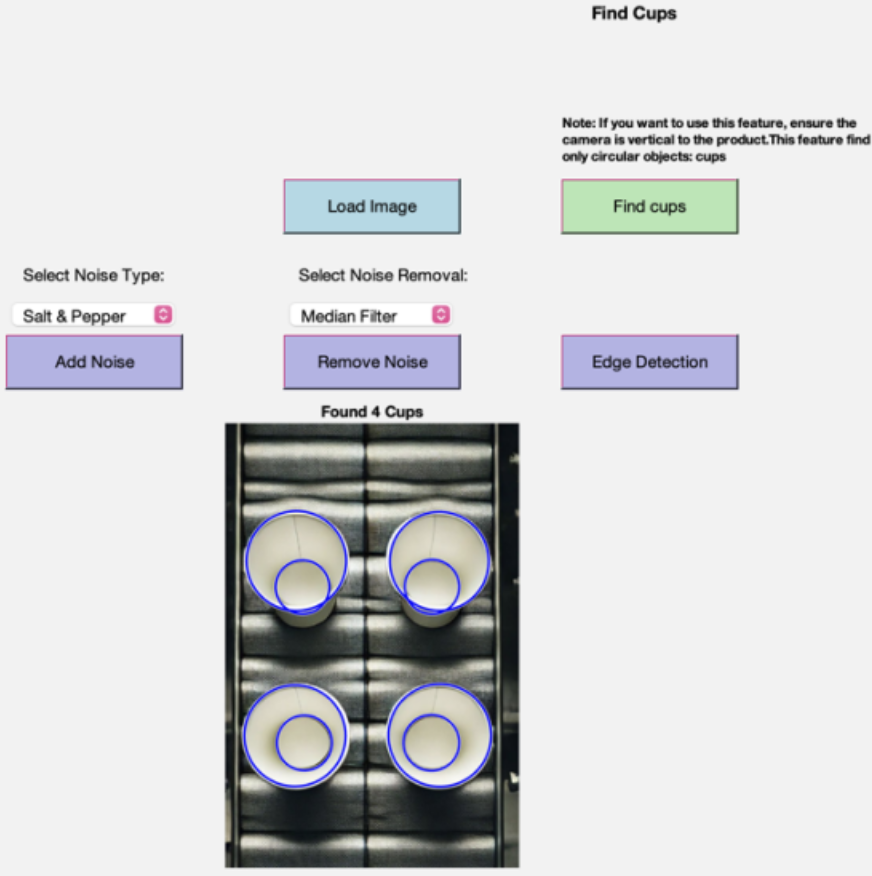
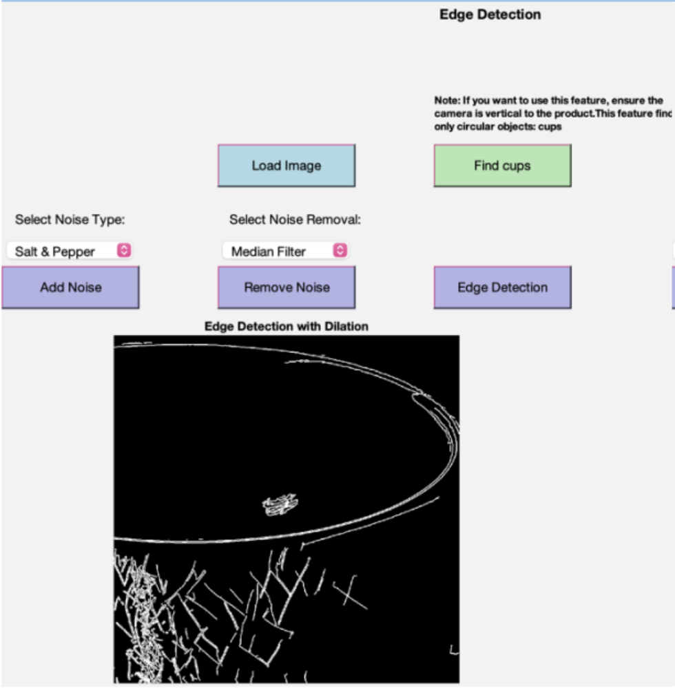

This project leverages computer vision techniques to automate quality inspection in production lines. It detects surface-level product defects such as cracks and scratches using image processing algorithms. Features include noise addition/removal, edge detection, and product counting—all accessible via an interactive graphical interface.
The system identifies and counts circular items (e.g., cups) by analyzing shape and color features.
Defect edges such as cracks are highlighted using Canny edge detection for better visibility during quality checks.
